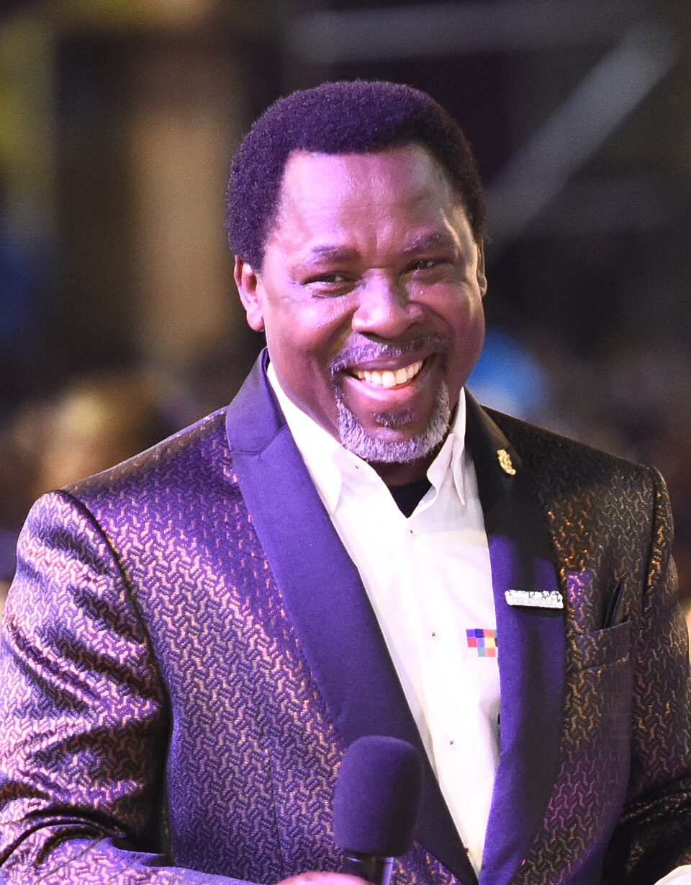

The Word, 24/7
Anointed sermons and teachings on a real daily programme that plays around the clock, the same for every viewer worldwide.


Dismantling strongholds by the power of the Holy Ghost — worship, the Word and divine encounter.
“For the weapons of our warfare are not carnal but mighty through God for the pulling down of strongholds.” — 2 Corinthians 10:4

Whatever you are facing — sickness, bondage, lack, family struggles — bring it to the altar of God. Send us your prayer request and our prayer team will stand with you in faith, wherever you are in the world.
“Call unto me, and I will answer thee, and shew thee great and mighty things, which thou knowest not.” — Jeremiah 33:3
We overcome by the blood of the Lamb and the word of our testimony (Revelation 12:11). Share what the Lord has done in your life through DWIM.
“Since I started joining the DWIM prayer line, my life has never been the same. Strongholds that held my family for years were dismantled in one night of prayer. God is truly in this place!”
“I was healed of a sickness the doctors could not explain, after the Apostle prayed for me on the prayer line. Distance is truly not a barrier — I was watching from another city!”
“The Word of God taught here gave me direction when my life had none. I found my destiny in Christ through Destiny Word International Ministries. To God be the glory!”

Your tithes, offerings and seeds fuel the gospel — carrying the Word of destiny to homes, cities and nations through DWIM TV. Give once, or become a DWIM Partner and stand with us every month in reaching a troubled world with the love of Christ.
“Every man according as he purposeth in his heart, so let him give; not grudgingly, or of necessity: for God loveth a cheerful giver.” — 2 Corinthians 9:7
1963 – 2021
The sermons, anointed prayers and worship songs of Prophet T.B. Joshua continue to bless the DWIM TV family around the world. Sit under his teaching on faith, deliverance and the love of God, and sing along with the songs he composed.
DWIM TV was born so that the Word, worship and prayer of Destiny Word International Ministries can reach every home, every phone and every nation, day and night. Distance is not a barrier: wherever you are, you can sit under the Word and join the altar.
Anointed sermons and teachings on a real daily programme that plays around the clock, the same for every viewer worldwide.
Zimbabwe gospel, Jesus Culture, Sinach and more. Every evening the Worship Hour fills your home with the presence of God.
Pray along, send your prayer request and receive deliverance. Strongholds are dismantled by the power of the Holy Ghost.
Built in Gweru, Zimbabwe, to carry the gospel across borders, on any phone, even on a small data budget.
These short videos play on air every 10 minutes as a break. The sermon is never cut: it carries on exactly where it stopped.
DWIM TV was designed and built in Zimbabwe by Ntandomods, a 20-year-old developer, as a gift to the house and to the kingdom of God. A young Zimbabwean using his skill to put the gospel in every pocket.
Destiny Word International Ministries is a Spirit-filled ministry based in Old Ascot, Gweru, Zimbabwe, founded on the Word of God and the power of the Holy Ghost. Through worship, the Word, prayer and prophetic ministry, DWIM is raising sons and daughters who know their destiny in Christ — dismantling strongholds and walking in divine remembrance.

Founder & Senior Pastor
A voice of the Word and the prophetic, Apostle Godfrey carries a burning passion to see strongholds dismantled and destinies discovered in Christ.

Co-Leader & Prayer Ministry
A mother in the faith and a prayer warrior, Apostle Teckla leads the intercession altar of the house — where distance is never a barrier.
Pick a message to start streaming.